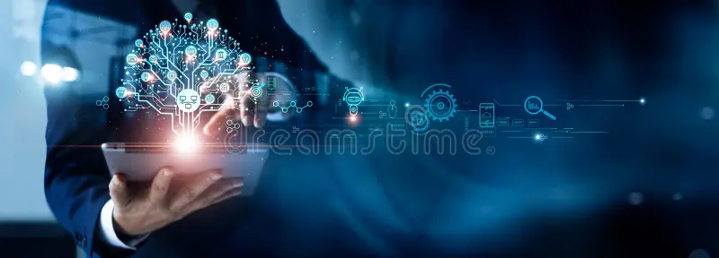

INFORMATION TECHNOLOGY

Information Technology (IT) is a dynamic and ever-evolving field that encompasses the use of computers, software, networks, and other electronic devices to store, retrieve, transmit, and manipulate data. It plays a crucial role in today's digital world, enabling businesses and individuals to operate more efficiently and effectively.
Information Technology (IT) is a dynamic field that involves the use of computers, software, networks, and other electronic devices to store, retrieve, transmit, and manipulate data. It encompasses a wide range of areas, including hardware and infrastructure, which form the backbone of IT systems through computers, servers, and networking equipment. Software development is critical, involving programming, software engineering, and application development for various platforms. Database management ensures structured data storage and analysis, while big data tools handle vast amounts of information. Cybersecurity is vital for protecting data and systems from unauthorized access and threats. Cloud computing offers scalable services over the internet, with major providers like AWS, Azure, and Google Cloud leading the market.
Graduate diplomas are currently widespread in New Zealand's higher education institutions based on Dr Theresa McLennan's data.[3] For instance, the Graduate Diploma in Applied Computing at Lincoln University was established in 1999 to provide a pathway into a computing job for those who already have a bachelor's degree in another field.
IT management includes governance, service management, and project management to align IT resources with business goals. Emerging technologies such as artificial intelligence, machine learning, the Internet of Things, and blockchain are transforming industries by enabling new capabilities and efficiencies. IT careers span a range of roles, from support and helpdesk to system administrators, network engineers, software developers, data scientists, and cybersecurity specialists, all of whom contribute to the secure and efficient operation of IT systems.
IT management involves governance, service management, and project management to ensure IT resources are used effectively and align with organizational goals. IT governance establishes frameworks and processes for decision-making and resource allocation, while IT Service Management (ITSM) focuses on delivering high-quality IT services, often guided by frameworks like ITIL. Project management ensures IT projects are completed on time, within budget, and to specifications, using methodologies like Agile and Waterfall.